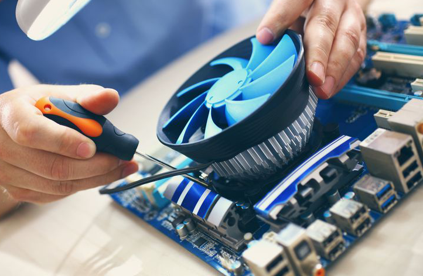
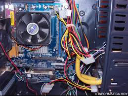

Reparación de Ordenadores
Cada vez que llevamos a cabo la reparación de ordenadores hacemos un copia
de seguridad de su disco para que si algo saliera mal podamos llevar a cabo
la reparación de su ordenador y que sus datos siempre estan a salvo durante
la reparación de su ordenador.

Servicio Técnico Informático
Con este servicio un técnico informático se desplazará hasta su empresa
y solucionará in situ cualquier problema que encuentre.
Sus ordenadores sólo saldrán de su oficina cuando por necesidades de
garantía sea necesario llevarlo al fabricante.
Venta de Ordenadores
Ofrecemos un servicio de asesoramiento a todos nuestros clientes sobre que material
informático es el que mejor responderá a sus necesidades y si el cliente lo desea se
lo proporcionamos.
Mantenimiento integral de sistemas
Con nuestro Contrato de Mantenimiento de Ordenadores el técnico asignado a su empresa se
encargará de todo.
Sea cual sea la opción elegida disfrutará de las ventajas de tener un informático en plantilla
con los mejores tiempos de respuesta.

Eliminación de vírus
Por lo general, la eliminación de un vírus se puede realizar de forma medianamente sencilla,
pero en ocasiones nos vemos obligados a formatear el ordenador del cliente.